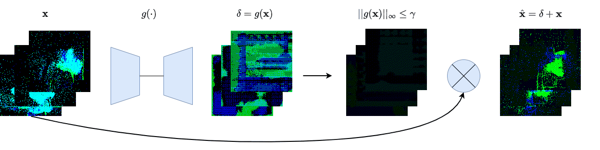
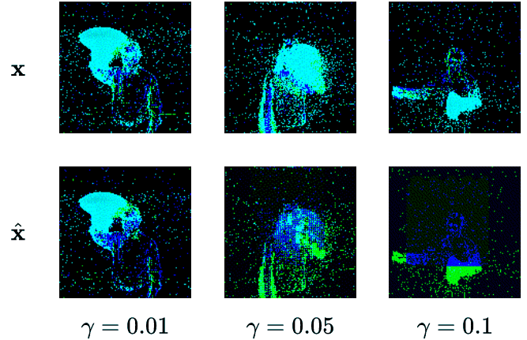

We create four different backdoor attacks on SNNs using neuromorphic data. Using static, moving, smart, and dynamic trigger. The construction of the dynamic trigger is shown in the figure. The trigger is generated using a spiking autoencoder, which from noise constructs a trigger that is then added to the clean input and used to attack the SNN. We can control the stealthiness of the trigger, making it invisible to the human eye, but still effective in attacking the SNN.
Deep neural networks (DNNs) have demonstrated remarkable performance across various tasks, including image and speech recognition. However, maximizing the effectiveness of DNNs requires meticulous optimization of numerous hyperparameters and network parameters through training. Moreover, high-performance DNNs entail many parameters, which consume significant energy during training. In order to overcome these challenges, researchers have turned to spiking neural networks (SNNs), which offer enhanced energy efficiency and biologically plausible data processing capabilities, rendering them highly suitable for sensory data tasks, particularly in neuromorphic data. Despite their advantages, SNNs, like DNNs, are susceptible to various threats, including adversarial examples and backdoor attacks. Yet, the field of SNNs still needs to be explored in terms of understanding and countering these attacks.
This paper delves into backdoor attacks in SNNs using neuromorphic datasets and diverse triggers. Specifically, we explore backdoor triggers within neuromorphic data that can manipulate their position and color, providing a broader scope of possibilities than conventional triggers in domains like images. We present various attack strategies, achieving an attack success rate of up to 100% while maintaining a negligible impact on clean accuracy. Furthermore, we assess these attacks' stealthiness, revealing that our most potent attacks possess significant stealth capabilities. Lastly, we adapt several state-of-the-art defenses from the image domain, evaluating their efficacy on neuromorphic data and uncovering instances where they fall short, leading to compromised performance.
